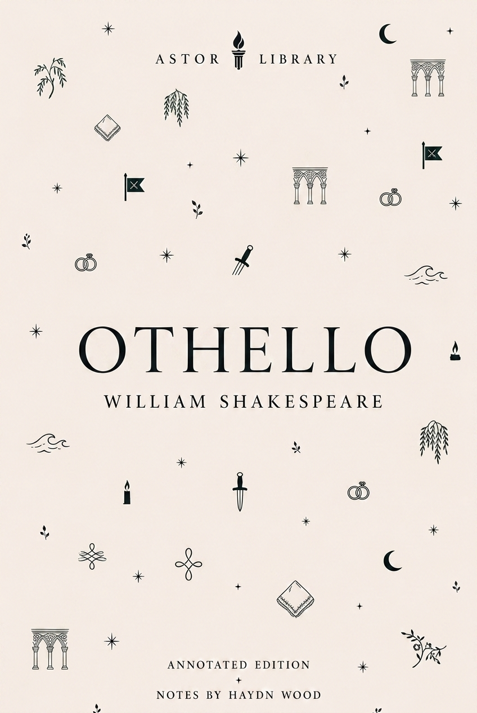

Shakespeare
A Midsummer Night's Dream, William Shakespeare
1600 quarto, 1623 Folio, Ovid, Chaucer, Robin Goodfellow, Athens, fairy power, mechanicals, Brook's 1970 RSC production, Mendelssohn, Britten and screen versions.
 LIBRARY
LIBRARYCatalogue
Current Astor text pages, arranged by author and period.
Shakespeare
1600 quarto, 1623 Folio, Ovid, Chaucer, Robin Goodfellow, Athens, fairy power, mechanicals, Brook's 1970 RSC production, Mendelssohn, Britten and screen versions.

Shakespeare
First printed in the 1623 First Folio, Sea Venture and Bermuda sources, Montaigne, Prospero, Miranda, Ariel, Caliban, masque, music, colonial readings and stage afterlives.

Shakespeare
1602 quarto, 1623 Folio, Windsor domestic comedy, Falstaff, Mistress Ford, Mistress Page, Ford's jealousy, Anne Page, buck-basket, Brentford disguise and Herne's Oak.

Shakespeare
1594 quarto as The First Part of the Contention, Gloucester, Suffolk, Queen Margaret, Jack Cade, York's claim, St Albans, civil-war beginnings and performance records.

Shakespeare
1598 quarto, Holinshed source history, Henry IV, Prince Hal, Falstaff, Hotspur, Eastcheap, Shrewsbury, honour, rebellion, performance and screen afterlives.

Shakespeare
1604 Whitehall performance record, 1622 Quarto, 1623 First Folio, Cinthio source, Venice, Cyprus, Iago, Desdemona, the handkerchief, race, military service and screen afterlives.

Ancient & Epic
Dryden’s 1697 translation of Virgil’s Roman epic: Troy, Aeneas, Dido, the underworld, Turnus, Augustan context, epic form, images and afterlives.

Restoration & Enlightenment
1726 anonymous publication, Motte and Faulkner textual history, Lilliput, Brobdingnag, Laputa, Houyhnhnmland, travel-writing parody, politics, science and human pride.

Renaissance & Early Modern
1513 composition, 1532 publication, Florentine politics, Medici rule, Cesare Borgia, arms, law, virtù, fortuna, fear, appearance, reception and image records.

Shakespeare
Q1, Q2 and First Folio textual history, Amleth source tradition, revenge tragedy, Elsinore, Ophelia, stage history and screen versions.

Shakespeare
Quarto and Folio textual history, Lear’s division of the kingdom, Cordelia, Gloucester and Edgar, source material, Tate’s adaptation, RSC records and screen afterlives.

Shakespeare
1597 quarto, 1623 First Folio, More and Holinshed sources, political performance, tyranny, Lady Anne, Clarence, the princes, Bosworth, stage history and screen versions.

Modern
Publication history, Russian Revolution context, Stalinism, propaganda, allegory, rewritten commandments, Boxer, Squealer, stage afterlives and screen versions.

Romantic & Regency
First publication, First Impressions, Regency marriage economics, entail, free indirect style, Elizabeth Bennet, Darcy, Wickham, AQA GCSE route and adaptations.

Victorian
1847 publication under Ellis Bell, Haworth and the moors, Lockwood and Nelly Dean, Heathcliff, Catherine, inheritance, revenge, Gothic violence, dialect and screen afterlives.

Victorian
Publication history, Victorian London, science, secrecy, narrative method, stage versions, screen afterlives and the divided self.

Victorian
1890 Lippincott's magazine text, 1891 revised book edition, aestheticism, decadence, reception controversy, narrative doubling, portrait symbolism and stage/screen afterlives.

Victorian
1897 serial, 1898 book publication, Woking and Horsell Common, Martian invasion, Heat-Ray, fighting-machines, Victorian science, imperial reversal, radio and screen afterlives.

Victorian
Second Sherlock Holmes novel: Lippincott's publication, Mary Morstan, the Agra treasure, the 1857 colonial frame, deduction, Thames pursuit, stage history and screen versions.

American
Two Astor editions, 1851 publication history, Melville’s maritime background, the Essex disaster, Mocha Dick, whaling, image records and screen versions.

American
1903 publication, Buck, Klondike Gold Rush context, sled-dog labour, naturalism, instinct, John Thornton, image records and screen versions.